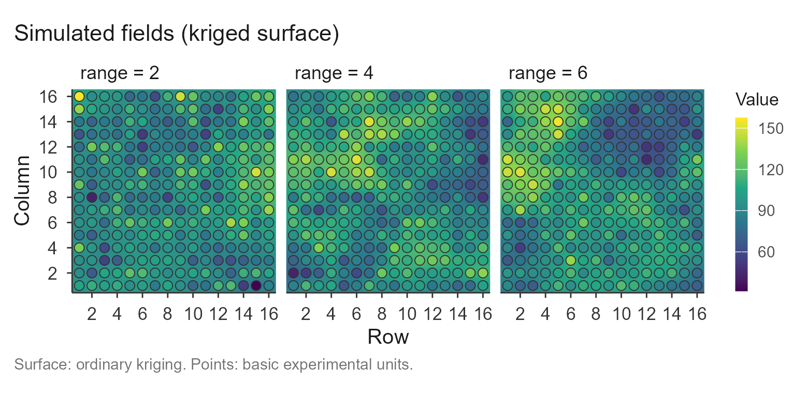
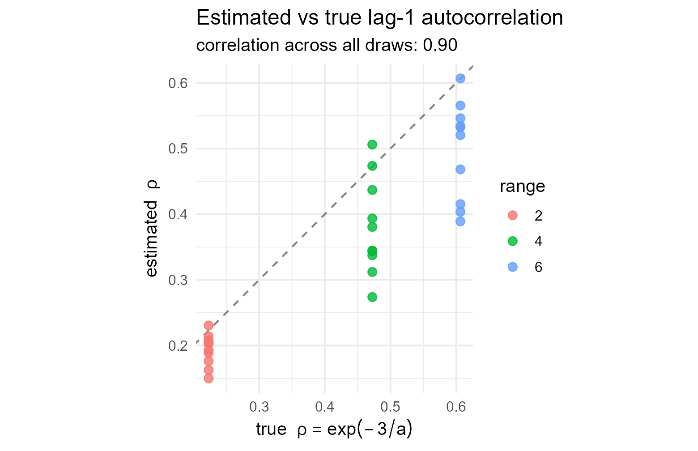

The idea
On real uniformity trials the optimal plot size is unknown – that is the whole reason to estimate it. To validate the methods we need the opposite: data whose spatial structure is known by construction, so an estimate can be compared against a truth. This article simulates such fields and checks what the package recovers.
The fields are drawn from a Gaussian process with a known exponential variogram. Two quantities are then known exactly:
- the range of the variogram,
a, the distance over which basic units stay correlated; and - the lag-1 autocorrelation between adjacent units,
,
which follows from the effective-range convention the package uses
(
reaches 95% of the sill at
a).
The generator
A field is one draw from a multivariate normal whose covariance decays exponentially with distance. Building it needs nothing beyond base R:
gen_field <- function(nr, nc, range, mu = 100, psill = 350, nugget = 50) {
xy <- expand.grid(r = seq_len(nr), c = seq_len(nc))
D <- as.matrix(dist(xy))
S <- psill * exp(-3 * D / range) # structured covariance, 95% decay at `range`
diag(S) <- psill + nugget # nugget: variance with no spatial structure
z <- mu + t(chol(S)) %*% rnorm(nr * nc)
matrix(as.numeric(z), nrow = nr, ncol = nc)
}A larger range means smoother fields: neighbours
resemble one another over a longer distance. The three fields below, on
a 16 x 16 grid, share one colour scale, so the increasing spatial
structure is visible directly.
set.seed(99)
fields <- lapply(c(2, 4, 6), function(a) gen_field(16, 16, range = a))
names(fields) <- paste("range =", c(2, 4, 6))
plot(check_trial(fields), title = "Simulated fields (kriged surface)")
#> Checking 3 trial(s).
Recovering the autocorrelation
The lag-1 autocorrelation is the quantity the Paranaíba method rests
on, and the one a short trial estimates most stably. For each range we
draw several fields, estimate
with calc_paranaiba() (the average of its two directional
walks), and compare it with the truth
.
set.seed(2026)
ranges <- c(2, 4, 6)
rho <- do.call(rbind, lapply(ranges, function(a) {
do.call(rbind, lapply(1:10, function(i) {
s <- suppressMessages(calc_paranaiba(gen_field(16, 16, a)))$summary
data.frame(range = a, rho_true = exp(-3 / a),
rho_est = mean(c(s$rho_row, s$rho_col)))
}))
}))
agg <- aggregate(cbind(rho_true, rho_est) ~ range, rho, mean)
agg$bias <- agg$rho_est - agg$rho_true
round(agg, 3)
#> range rho_true rho_est bias
#> 1 2 0.223 0.193 -0.030
#> 2 4 0.472 0.380 -0.092
#> 3 6 0.607 0.498 -0.108The estimate tracks the truth across the whole range, with a small downward bias – the familiar attenuation of a lag-1 autocorrelation estimated from a short series. The relationship is tight across individual draws, not just on average:
library(ggplot2)
ggplot(rho, aes(rho_true, rho_est, colour = factor(range))) +
geom_abline(slope = 1, intercept = 0, linetype = 2, colour = "grey50") +
geom_point(size = 2.4, alpha = 0.8) +
labs(title = "Estimated vs true lag-1 autocorrelation",
subtitle = sprintf("correlation across all draws: %.2f",
cor(rho$rho_true, rho$rho_est)),
x = expression("true " * rho == exp(-3/a)),
y = expression("estimated " * rho),
colour = "range") +
coord_equal() +
theme_minimal(base_size = 12)
Points sit just below the identity line: the estimator is slightly conservative but unbiased in ordering, which is what matters when feeds a plot-size formula.
Response of the CV-curve methods
The plateau methods do not estimate
;
they read the optimal plot size off the CV-versus-size curve built by
calc_cv_shapes(). A field with more spatial structure keeps
rewarding larger plots for longer, so the optimum should grow
with the range. It does:
set.seed(7)
cv <- do.call(rbind, lapply(ranges, function(a) {
do.call(rbind, lapply(1:4, function(i) {
tab <- suppressMessages(calc_cv_shapes(gen_field(16, 16, a)))
lrp <- fit_lrp(tab, x = "x", cv = "cv", step = 0.25)
qrp <- fit_qrp(tab, x = "x", cv = "cv", step = 0.25)
data.frame(range = a,
LRP = unname(lrp$parameters["Breakpoint"]),
QRP = unname(qrp$parameters["Breakpoint"]))
}))
}))
#> Using x = 'x', cv = 'cv' (single series).
#> Using x = 'x', cv = 'cv' (single series).
#> Using x = 'x', cv = 'cv' (single series).
#> Using x = 'x', cv = 'cv' (single series).
#> Using x = 'x', cv = 'cv' (single series).
#> Using x = 'x', cv = 'cv' (single series).
#> Using x = 'x', cv = 'cv' (single series).
#> Using x = 'x', cv = 'cv' (single series).
#> Using x = 'x', cv = 'cv' (single series).
#> Using x = 'x', cv = 'cv' (single series).
#> Using x = 'x', cv = 'cv' (single series).
#> Using x = 'x', cv = 'cv' (single series).
#> Using x = 'x', cv = 'cv' (single series).
#> Using x = 'x', cv = 'cv' (single series).
#> Using x = 'x', cv = 'cv' (single series).
#> Using x = 'x', cv = 'cv' (single series).
#> Using x = 'x', cv = 'cv' (single series).
#> Using x = 'x', cv = 'cv' (single series).
#> Using x = 'x', cv = 'cv' (single series).
#> Using x = 'x', cv = 'cv' (single series).
#> Using x = 'x', cv = 'cv' (single series).
#> Using x = 'x', cv = 'cv' (single series).
#> Using x = 'x', cv = 'cv' (single series).
#> Using x = 'x', cv = 'cv' (single series).
aggregate(cbind(LRP, QRP) ~ range, cv, mean)
#> range LRP QRP
#> 1 2 10.6875 16.7500
#> 2 4 18.3125 27.1250
#> 3 6 20.3125 33.0625Both optima increase monotonically with the generating range: the methods respond to a controlled change in spatial structure in the expected direction.
What this does and does not show
The simulation validates two things cleanly. First, the
autocorrelation machinery underneath
check_trial() and calc_paranaiba() recovers a
known
.
Second, the CV-curve optima move in the right direction
as spatial structure is dialled up.
It also makes an honest limitation visible. There is no single “true
optimal plot size” to recover: the methods target different definitions
and answer different questions. The plateau methods (LRP, QRP) grow with
the range, while the Paranaíba optimum moves the other way – it
is largest at
and shrinks as dependence strengthens, by construction of its formula
(see vignette("paranaiba")). That divergence is a
documented property, not an error, and it is exactly what
vignette("compare") is for.
A second caveat worth stating: the point estimate of the
variogram range from a single small trial is noisy, so it is not used as
a validation target here. The nugget-to-sill ratio and the
autocorrelation are the more stable readings, which is why
check_trial() leads with them.
Extending this to your own scenarios
The generator is the hook. Vary its arguments to build the cases you care about:
- raise
nuggettowardpsillto simulate a field with weak spatial dependence, where every method should return a small optimum andcheck_trial()should report a high nugget-to-sill ratio; - change the grid dimensions to study how few basic units the methods tolerate;
- replace the exponential covariance with a spherical or Gaussian one to check robustness to the variogram shape.
Wrapping the loops above in a function that returns
estimate-minus-truth is the whole of a validation harness. See
vignette("check_trial") for the diagnostics and
vignette("compare") for reading several methods against
each other.